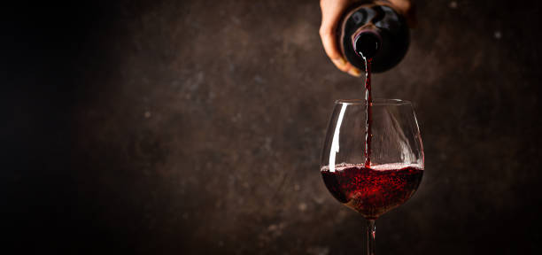

<!DOCTYPE html>
<html lang="es">
<head>
    <meta charset="UTF-8">
    <meta http-equiv="X-UA-Compatible" content="IE=edge">
    <meta name="viewport" content="width=device-width, initial-scale=1.0">
    <title>Elexir Wines & Deli</title> 

      
    
    
    <!-- Fonts -->
    
    <link href="https://fonts.googleapis.com/css2?family=Gentium+Plus&family=Indie+Flower&family=Oregano:ital@1&display=swap" rel="stylesheet">
    <link href="https://fonts.googleapis.com/css2?family=Emilys+Candy&family=Gentium+Plus&family=Indie+Flower&family=Oregano:ital@1&display=swap" rel="stylesheet">
                    <!-- Link css -->
    <link rel="stylesheet" href="css/bootstrap.min.css">
    <link rel="stylesheet" href="estilos/estilos.css">
    <link
    rel="stylesheet"
    href="https://cdnjs.cloudflare.com/ajax/libs/animate.css/4.1.1/animate.min.css"/>
</head>
</html>

<h1 class="titulo">Elexir Wines & Deli</h1>

<body>
    
    <!-- Menu -->
    <header>
        
    <nav class="navbar-center navbar-dark bg-dark navbar-expand-lg">
        <div class="container-fluid">
          
          <button class="navbar-toggler" type="button" data-bs-toggle="collapse" data-bs-target="#navbarNavAltMarkup" aria-controls="navbarNavAltMarkup" aria-expanded="false" aria-label="Toggle navigation">
            <span class="navbar-toggler-icon"></span>
          </button>
          <div class="collapse navbar-collapse" id="navbarNavAltMarkup">
            <div class="navbar-nav">
              
              <a class="nav-link active " aria-current="page" href="paginas/home.html">Home</a>
              <a class="nav-link" href="paginas/vinos.html">Vinos</a>
              <a class="nav-link" href="paginas/espumantes.html">Espumantes</a>
              <a class="nav-link" href="paginas/delicattessen.html">Delicattessen</a>
              <a class="nav-link" href="paginas/contacto.html">Contacto</a>

              
            </a>
            </div>
          </div>
        </div>
      </nav>
    </header>


    <div class="container-fluid col-xs-4 col-sm-8 col-md-10 col-lg-12">

<section class="section"> 
    
    <h2 class="parrafoimp col-12">La historia del vino en nuestro pais</h2>
    <div class="imagen__main"></div>
    <p class="c">La producción vitivinícola en Argentina se remonta al año 1551, cuando el presbítero Juan Cedrón (o quizá Cidrón) plantó en Santiago del Estero (provincia), las primeras cepas de uva moscatel y "uva país", procedentes de España y a su vez traídas desde la ciudad chilena de La Serena.</p>
    
    <p class="">En la desmesura de los paisajes patagónicos, en el desierto originario del sur de la Argentina, el vino surge como un milagro del suelo, del esfuerzo de los hombres y su pasión por la naturaleza. 
    En esa estepa colores ocre y tierra surgieron vinos de una fuerte identidad, que encarnan la esencia imponente de su tierra.</p>
    
    
    

    <!-- Info 2 -->

    <h2 class="parrafoimp2">Elexir es una bodega de vinos de alta gama, establecida en 1995 en Mendoza, Argentina. Con el respeto y conocimiento del lugar de origen de nuestras uvas, la experiencia de nuestros productores definidos por las características del clima y el suelo de la región, buscamos transmitir la mas fiel expresión de cada terroir. 
    </h2>
    <br>
    <p>Comparta con nosotros degustaciones de los mejores vinos de Argentina. Acompáñenos a sumergirnos completamente en el conocimiento de uno de los mayores tesoros de la vida.
    </p>
</section>
</div>


<!-- Pie de pagina -->

<br>
<footer class="container-fluid col-xs-4 col-sm-8 col-md-10 col-lg-12 footer bg-dark">
    <h2>Seguinos en</h2>
    <h3>Facebook</h3>
    <h3>Instagram</h3>
    <h3>Twitter</h3>
<br>
    <h4>Copyright © 2018 - Diseño Web realizado por Della Maggiore Iván</h4>

</footer>


<script src="js/bootstrap.min.js"></script>
</div>
</body>
